<!DOCTYPE lake>
<h2 data-lake-id="I7qZr" id="I7qZr"><span data-lake-id="uca11bf2d" id="uca11bf2d">安装pycharm集成开发工具</span></h2><p data-lake-id="u18543734" id="u18543734"><strong><span data-lake-id="u720bbd36" id="u720bbd36">集成开发环境</span></strong><span data-lake-id="ua9ae120b" id="ua9ae120b">（Integrated Development Environment ）,通常称为IDE。<br/></span><span data-lake-id="ubcdfaf2c" id="ubcdfaf2c">是用于提供程序开发环境的应用程序，一般包括代码编辑器、编译器、调试器和图形用户界面等工具</span></p><p data-lake-id="u27dd5659" id="u27dd5659"><span data-lake-id="u336c6d3d" id="u336c6d3d">我们可以使用jetbrains公司的开发工具Pycharm。</span></p><p data-lake-id="ub26a73bc" id="ub26a73bc"><span data-lake-id="u975d07c8" id="u975d07c8">​</span><br/></p><p data-lake-id="u87b4395c" id="u87b4395c"><span data-lake-id="u4a85585d" id="u4a85585d">主页地址:</span><a data-lake-id="u3e62effa" href="https://www.jetbrains.com/pycharm/" id="u3e62effa" rel="noopener noreferrer" target="_blank"><span data-lake-id="u618c14d8" id="u618c14d8">https://www.jetbrains.com/pycharm/</span></a></p><p data-lake-id="ub0ce4923" id="ub0ce4923"><span data-lake-id="ucfb4c79b" id="ucfb4c79b">建议使用无需破解的社区版2022.3.3：</span><a data-lake-id="uc22853ba" href="https://www.jetbrains.com/pycharm/download/other.html" id="uc22853ba" rel="noopener noreferrer" target="_blank"><span data-lake-id="u3445c94a" id="u3445c94a">https://www.jetbrains.com/pycharm/download/other.html</span></a></p><p data-lake-id="ue9e5bb8b" id="ue9e5bb8b">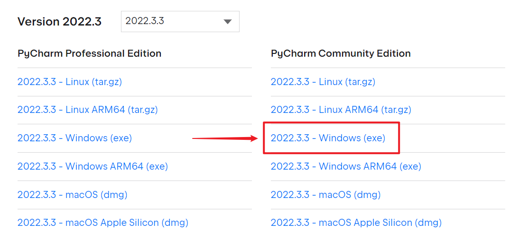</p><p data-lake-id="udc8a6023" id="udc8a6023"><strong><span data-lake-id="u04357923" id="u04357923">安装选项：</span></strong></p><p data-lake-id="u52220f82" id="u52220f82">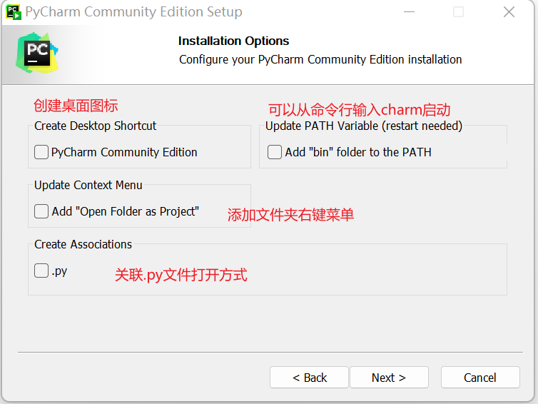</p><p data-lake-id="u7c554bc6" id="u7c554bc6"><span data-lake-id="ubea286b5" id="ubea286b5">建议勾选：</span><code data-lake-id="uecbb10fd" id="uecbb10fd"><span data-lake-id="ufd754299" id="ufd754299">创建桌面图标</span></code><span data-lake-id="u7cdc90b6" id="u7cdc90b6">，别的不用选</span></p><h2 data-lake-id="kECDP" id="kECDP"><span data-lake-id="uef2a0709" id="uef2a0709">推荐插件</span></h2><p data-lake-id="uf55f2341" id="uf55f2341"><code data-lake-id="u2378752d" id="u2378752d"><span data-lake-id="uc844d866" id="uc844d866">requirements</span></code><span data-lake-id="u475438df" id="u475438df">：Python依赖辅助</span></p><p data-lake-id="u059282bd" id="u059282bd"><code data-lake-id="ue2cc43b5" id="ue2cc43b5"><span data-lake-id="u19d30c3a" id="u19d30c3a">.ignore</span></code><span data-lake-id="ub64e8ca4" id="ub64e8ca4">：git忽略文件生成</span></p><p data-lake-id="u7c60f7c0" id="u7c60f7c0"><code data-lake-id="uc4c0fc83" id="uc4c0fc83"><span data-lake-id="u802c3ae5" id="u802c3ae5">Translation</span></code><span data-lake-id="u47199dae" id="u47199dae">：翻译插件</span></p><p data-lake-id="u4d07523d" id="u4d07523d"><code data-lake-id="u714b722f" id="u714b722f"><span data-lake-id="u37da3a83" id="u37da3a83">CodeGlance Pro</span></code><span data-lake-id="u54125456" id="u54125456">：右侧代码导航条</span></p><p data-lake-id="ud0fbcfe9" id="ud0fbcfe9"><code data-lake-id="u61d70ee0" id="u61d70ee0"><span data-lake-id="ua8bb2e28" id="ua8bb2e28">Live Coding in Python</span></code><span data-lake-id="u2ae21e43" id="u2ae21e43">：代码实时预览</span></p><p data-lake-id="u7d19d379" id="u7d19d379"><code data-lake-id="u3d651d32" id="u3d651d32"><span data-lake-id="u5592db08" id="u5592db08">bito</span></code><span data-lake-id="ua52b9c6d" id="ua52b9c6d">：AI代码辅助插件，官网：</span><a data-lake-id="u3ed8d534" href="https://bito.ai/" id="u3ed8d534" rel="noopener noreferrer" target="_blank"><span data-lake-id="ue0e4d4ac" id="ue0e4d4ac">https://bito.ai/</span></a></p><p data-lake-id="u458aa79b" id="u458aa79b"><code data-lake-id="u3531e80d" id="u3531e80d"><span data-lake-id="ub6248090" id="ub6248090">codeium</span></code><span data-lake-id="u053aab69" id="u053aab69">：AI代码提示</span></p><p data-lake-id="u00594bd3" id="u00594bd3"><br/></p><h2 data-lake-id="aiIoe" id="aiIoe"><span data-lake-id="u820dc13f" id="u820dc13f">PyCharm添加外部工具</span></h2><h3 data-lake-id="MESic" id="MESic"><span data-lake-id="u2b0d2ae0" id="u2b0d2ae0">QtDesigner</span></h3><p data-lake-id="udef6952c" id="udef6952c"><span data-lake-id="ud603a6d9" id="ud603a6d9">可视化UI设计客户端工具</span></p><ol list="u18f800c3"><li data-lake-id="ud027c988" fid="u9c6674f5" id="ud027c988"><span data-lake-id="u35c2a11f" id="u35c2a11f">路径：</span><code data-lake-id="ua3c0dcff" id="ua3c0dcff"><span data-lake-id="u5a9e9dd3" id="u5a9e9dd3">File | Settings | Tools | External Tools</span></code></li><li data-lake-id="u3f42479a" fid="u9c6674f5" id="u3f42479a"><span data-lake-id="u1c1ad298" id="u1c1ad298">点</span><code data-lake-id="u5752c35d" id="u5752c35d"><span data-lake-id="ue5ca3bd2" id="ue5ca3bd2">+</span></code><span data-lake-id="u8b8d32cd" id="u8b8d32cd">号，给External Tools组添加一个条目，填写如下内容</span></li></ol><ul data-lake-indent="1" list="u9cc483b2"><li data-lake-id="u02a83e16" fid="u72c2e242" id="u02a83e16"><span data-lake-id="u930f9c8e" id="u930f9c8e">Name：</span><code data-lake-id="u3e1f822f" id="u3e1f822f"><span data-lake-id="ue202919d" id="ue202919d">QtDesigner</span></code></li><li data-lake-id="u2ee0d21f" fid="u72c2e242" id="u2ee0d21f"><span data-lake-id="u71e011c8" id="u71e011c8">Program：</span><code data-lake-id="ub7c37912" id="ub7c37912"><span data-lake-id="u7a607923" id="u7a607923">C:\Users\用户名\AppData\Local\Programs\Python\Python39\Lib\site-packages\qt5_applications\Qt\bin\designer.exe</span></code></li><li data-lake-id="u105f581d" fid="u72c2e242" id="u105f581d"><span data-lake-id="ua4be7a39" id="ua4be7a39">Working directory：</span><code data-lake-id="u2e864a90" id="u2e864a90"><span data-lake-id="uc1819bd4" id="uc1819bd4">$FileDir$</span></code></li></ul><ol list="u41812bad" start="3"><li data-lake-id="u5ed97e71" fid="u771dff62" id="u5ed97e71"><span data-lake-id="uc23acb2e" id="uc23acb2e">点击</span><code data-lake-id="ub336a477" id="ub336a477"><span data-lake-id="u34bd92d7" id="u34bd92d7">OK</span></code><span data-lake-id="u1be88117" id="u1be88117">，再点</span><code data-lake-id="udfc950ad" id="udfc950ad"><span data-lake-id="uc50d1083" id="uc50d1083">Settings</span></code><span data-lake-id="u73e566c1" id="u73e566c1">对话框的</span><code data-lake-id="u059b22d4" id="u059b22d4"><span data-lake-id="u3c62f6c2" id="u3c62f6c2">Apply</span></code></li></ol><p data-lake-id="u545c8cd1" id="u545c8cd1"><span data-lake-id="ue49b050c" id="ue49b050c">如下图：</span></p><p data-lake-id="ud30bf034" id="ud30bf034">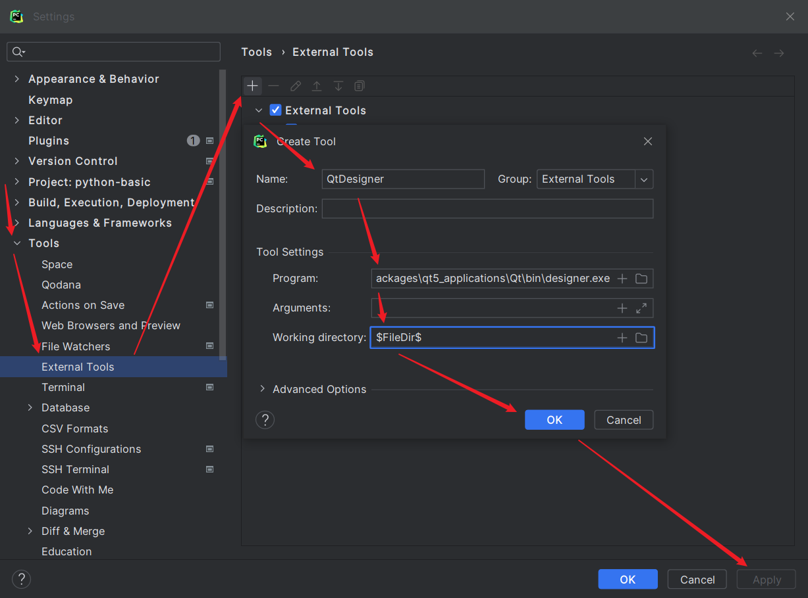</p><blockquote class="lake-alert lake-alert-warning" data-lake-id="u5046603c" id="u5046603c"><p data-lake-id="u1d91071b" id="u1d91071b"><span data-lake-id="u6fe9f37f" id="u6fe9f37f">注意，如果找不到designer.exe：</span></p><ol list="u8cbcbc93"><li data-lake-id="u9fb003be" fid="ue7d4193c" id="u9fb003be"><span data-lake-id="u8819bf9a" id="u8819bf9a">Program路径要根据自己安装的PyQt5-tools路径设置（</span><code data-lake-id="u9ed75ecd" id="u9ed75ecd"><span data-lake-id="uc5c7e9ba" id="uc5c7e9ba">pip install PyQt5-tools</span></code><span data-lake-id="ue822b809" id="ue822b809">）</span></li><li data-lake-id="u64d12f5c" fid="ue7d4193c" id="u64d12f5c"><span data-lake-id="u1dcfefa0" id="u1dcfefa0">安装的PyQt5-tools路径的取决于安装Python时的路径</span></li><li data-lake-id="ua9a53c35" fid="ue7d4193c" id="ua9a53c35"><span data-lake-id="ue5cae6e7" id="ue5cae6e7">如果用的是Python3.9.x，尝试用以下路径文件（先尝试在Win+R中能否打开）：</span></li></ol><p data-lake-id="uf2f0c5ad" id="uf2f0c5ad"><code data-lake-id="uf8648921" id="uf8648921"><span data-lake-id="u8ecfb4dd" id="u8ecfb4dd">%LOCALAPPDATA%\Programs\Python\Python39\Lib\site-packages\qt5_applications\Qt\bin\designer.exe</span></code></p><ol list="u36086612" start="4"><li data-lake-id="u53bf65c4" fid="u99b9decf" id="u53bf65c4"><span data-lake-id="u613bd369" id="u613bd369">实在找不到，建议安装</span><code data-lake-id="u5e71b351" id="u5e71b351"><span data-lake-id="uc2d054e0" id="uc2d054e0">everything.exe</span></code><span data-lake-id="u6f388657" id="u6f388657">，全局搜索</span><code data-lake-id="uae554e1f" id="uae554e1f"><span data-lake-id="u4944a841" id="u4944a841">designer.exe</span></code><span data-lake-id="u421e03ca" id="u421e03ca">位置</span></li></ol></blockquote><p data-lake-id="ud51286d6" id="ud51286d6"><span data-lake-id="u3fa5ba06" id="u3fa5ba06">​</span><br/></p><p data-lake-id="uf9b0f5d7" id="uf9b0f5d7"><span data-lake-id="u1750c392" id="u1750c392">添加完成后可在文件或文件夹上右键，</span><code data-lake-id="u327dd1aa" id="u327dd1aa"><span data-lake-id="ub7b037df" id="ub7b037df">External Tools | QtDesigner</span></code><span data-lake-id="u1dcdd1b9" id="u1dcdd1b9"> 即可打开</span><code data-lake-id="u4751851a" id="u4751851a"><span data-lake-id="uc724f0b3" id="uc724f0b3">designer.exe</span></code></p><p data-lake-id="uc0e315b8" id="uc0e315b8">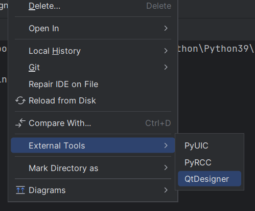</p><p data-lake-id="u50385b82" id="u50385b82"><br/></p><h3 data-lake-id="VNtxP" id="VNtxP"><span data-lake-id="ucddf1003" id="ucddf1003">PyUIC</span></h3><p data-lake-id="ucfd315ac" id="ucfd315ac"><span data-lake-id="ufc39eeef" id="ufc39eeef">作用：帮我们将</span><code data-lake-id="uc69a72c2" id="uc69a72c2"><span data-lake-id="ue1a63fbe" id="ue1a63fbe">.ui</span></code><span data-lake-id="uf73fa20e" id="uf73fa20e">界面设计文件转成</span><code data-lake-id="u1228f449" id="u1228f449"><span data-lake-id="ud07015e3" id="ud07015e3">.py</span></code><span data-lake-id="ueed6ae42" id="ueed6ae42">文件</span></p><ol list="u3fada3e9"><li data-lake-id="u8caeaf39" fid="u9c6674f5" id="u8caeaf39"><span data-lake-id="u73d5c1bb" id="u73d5c1bb">路径：</span><code data-lake-id="u2e8775b1" id="u2e8775b1"><span data-lake-id="ub86fcc13" id="ub86fcc13">File | Settings | Tools | External Tools</span></code></li><li data-lake-id="ud4940a5b" fid="u9c6674f5" id="ud4940a5b"><span data-lake-id="u064cc045" id="u064cc045">点</span><code data-lake-id="u94e4c23b" id="u94e4c23b"><span data-lake-id="u671e8880" id="u671e8880">+</span></code><span data-lake-id="ud30c1c21" id="ud30c1c21">号，给External Tools组添加一个条目，填写如下内容</span></li></ol><ul data-lake-indent="1" list="u9736cf63"><li data-lake-id="ub835b5b3" fid="u72c2e242" id="ub835b5b3"><span data-lake-id="ubcd4b1fa" id="ubcd4b1fa">Name：</span><code data-lake-id="ucbfc5382" id="ucbfc5382"><span data-lake-id="u91edb232" id="u91edb232">PyUIC</span></code></li><li data-lake-id="uf4a8d4ee" fid="u72c2e242" id="uf4a8d4ee"><span data-lake-id="u39b40d37" id="u39b40d37">Program：<br/></span><code data-lake-id="uce68e069" id="uce68e069"><span data-lake-id="u4c616d4d" id="u4c616d4d">C:\Users\用户名\AppData\Local\Programs\Python\Python39\Scripts\pyuic5.exe</span></code></li><li data-lake-id="u8783a174" fid="u72c2e242" id="u8783a174"><span data-lake-id="u217f4419" id="u217f4419">Arguments：</span><code data-lake-id="u87086cdd" id="u87086cdd"><span data-lake-id="u56f64dd6" id="u56f64dd6">$FileName$ --import-from=ui -o Ui_$FileNameWithoutExtension$.py</span></code></li><li data-lake-id="u72c46ed4" fid="u72c2e242" id="u72c46ed4"><span data-lake-id="u031c2696" id="u031c2696">Working directory：</span><code data-lake-id="u46d666a8" id="u46d666a8"><span data-lake-id="ua821957d" id="ua821957d">$FileDir$</span></code></li></ul><p data-lake-id="ud4fecd89" id="ud4fecd89">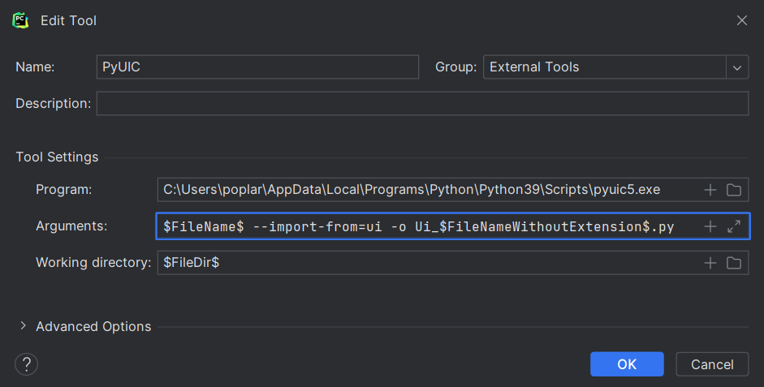</p><p data-lake-id="u9974fce4" id="u9974fce4"><span data-lake-id="ud6463e8d" id="ud6463e8d">添加完成后，可在</span><code data-lake-id="uf9f61ee0" id="uf9f61ee0"><span data-lake-id="ua8710670" id="ua8710670">.ui</span></code><span data-lake-id="udf045fe7" id="udf045fe7">文件右键，</span><code data-lake-id="uc44b7a5a" id="uc44b7a5a"><span data-lake-id="uc465e3c3" id="uc465e3c3">External Tools | PyUIC</span></code><span data-lake-id="ub5bc7951" id="ub5bc7951"> 即可生成对应的</span><code data-lake-id="u9c793c55" id="u9c793c55"><span data-lake-id="u3b0f280a" id="u3b0f280a">.py</span></code></p><p data-lake-id="ub5412a94" id="ub5412a94">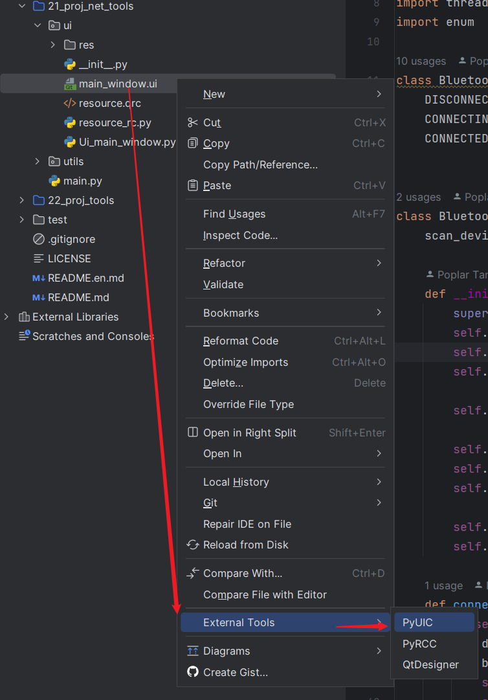</p><blockquote class="lake-alert lake-alert-warning" data-lake-id="u47c14098" id="u47c14098"><p data-lake-id="u1c01d546" id="u1c01d546"><span data-lake-id="u2872e118" id="u2872e118">Arguments中的参数</span></p><p data-lake-id="ue6ea5e1a" id="ue6ea5e1a"><span data-lake-id="ubdcfd4ce" id="ubdcfd4ce">​</span><br/></p><p data-lake-id="u40ee366e" id="u40ee366e"><code data-lake-id="uf20d7110" id="uf20d7110"><span data-lake-id="u395cb762" id="u395cb762">--import-from=ui</span></code><span data-lake-id="u2900dd21" id="u2900dd21"> 参数和值的作用：</span></p><p data-lake-id="u3db2f05b" id="u3db2f05b"><span data-lake-id="u4460c849" id="u4460c849">假如你通过</span><code data-lake-id="u35afbe85" id="u35afbe85"><span data-lake-id="u1f23e960" id="u1f23e960">.qrc</span></code><span data-lake-id="udfd12f1f" id="udfd12f1f">生成的资源文件</span><code data-lake-id="u5a06792e" id="u5a06792e"><span data-lake-id="u0ea9fe91" id="u0ea9fe91">xxx_rc.py</span></code><span data-lake-id="u890290e3" id="u890290e3">不在根目录，而是在子目录比如</span><code data-lake-id="u413605be" id="u413605be"><span data-lake-id="u01b7f756" id="u01b7f756">view/ui</span></code><span data-lake-id="u8e4e200a" id="u8e4e200a">目录，则可通过此配置，帮我们在通过</span><code data-lake-id="u81dec591" id="u81dec591"><span data-lake-id="u1778f5b8" id="u1778f5b8">.ui</span></code><span data-lake-id="u2d3e1a3e" id="u2d3e1a3e">生成</span><code data-lake-id="u38712ec1" id="u38712ec1"><span data-lake-id="u48460af4" id="u48460af4">.py</span></code><span data-lake-id="ua01841b1" id="ua01841b1">文件时，自动添加</span><code data-lake-id="uf870f968" id="uf870f968"><span data-lake-id="uc3352ca7" id="uc3352ca7">from ui import xxx_rc</span></code></p><p data-lake-id="u8f8e463b" id="u8f8e463b"><span data-lake-id="ua0409b2c" id="ua0409b2c">​</span><br/></p><p data-lake-id="uba0e2e7b" id="uba0e2e7b"><span data-lake-id="uec9213b1" id="uec9213b1">如果资源文件</span><code data-lake-id="ue7d0b764" id="ue7d0b764"><span data-lake-id="ude5e8a55" id="ude5e8a55">.qrc</span></code><span data-lake-id="u587e3717" id="u587e3717">就在根目录，则不用加此配置！</span></p></blockquote><h3 data-lake-id="D6hTY" id="D6hTY"><br/></h3><h3 data-lake-id="fz9Om" id="fz9Om"><span data-lake-id="ud51ced73" id="ud51ced73">PyRCC</span></h3><p data-lake-id="u8baf1ff2" id="u8baf1ff2"><span data-lake-id="uc330ef61" id="uc330ef61">作用：帮我们将</span><code data-lake-id="u19d29402" id="u19d29402"><span data-lake-id="u11509aaf" id="u11509aaf">.qrc</span></code><span data-lake-id="u921ed25c" id="u921ed25c">配置文件转成</span><code data-lake-id="u71011c56" id="u71011c56"><span data-lake-id="ubaa9ead3" id="ubaa9ead3">.py</span></code><span data-lake-id="u65f4f3df" id="u65f4f3df">文件</span></p><ol list="u0a5afca2"><li data-lake-id="u79ea6204" fid="u9c6674f5" id="u79ea6204"><span data-lake-id="u491e8bc8" id="u491e8bc8">路径：</span><code data-lake-id="u23dff8e6" id="u23dff8e6"><span data-lake-id="u1c986cfd" id="u1c986cfd">File | Settings | Tools | External Tools</span></code></li><li data-lake-id="u2cbe818d" fid="u9c6674f5" id="u2cbe818d"><span data-lake-id="uc762a90d" id="uc762a90d">点</span><code data-lake-id="u9948b682" id="u9948b682"><span data-lake-id="u7250b22b" id="u7250b22b">+</span></code><span data-lake-id="u06d692c7" id="u06d692c7">号，给External Tools组添加一个条目，填写如下内容</span></li></ol><ul data-lake-indent="1" list="u962ad007"><li data-lake-id="u1cd579c3" fid="u72c2e242" id="u1cd579c3"><span data-lake-id="u0c4dcfaa" id="u0c4dcfaa">Name：</span><code data-lake-id="u217f50f3" id="u217f50f3"><span data-lake-id="ubd883ecf" id="ubd883ecf">PyRCC</span></code></li><li data-lake-id="u7d5eaf4e" fid="u72c2e242" id="u7d5eaf4e"><span data-lake-id="u61d8d7b8" id="u61d8d7b8">Program：<br/></span><code data-lake-id="u735fa1ce" id="u735fa1ce"><span data-lake-id="u5cb32ce9" id="u5cb32ce9">C:\Users\用户名\AppData\Local\Programs\Python\Python39\Scripts\pyrcc5.exe</span></code></li><li data-lake-id="u61fa8421" fid="u72c2e242" id="u61fa8421"><span data-lake-id="ud6c8963e" id="ud6c8963e">Arguments：</span><code data-lake-id="u391b253d" id="u391b253d"><span data-lake-id="u9d389bd3" id="u9d389bd3">$FileName$ -o $FileNameWithoutExtension$_rc.py</span></code></li><li data-lake-id="u4a9c7208" fid="u72c2e242" id="u4a9c7208"><span data-lake-id="u5ce44ea1" id="u5ce44ea1">Working directory：</span><code data-lake-id="uf2070941" id="uf2070941"><span data-lake-id="u65090535" id="u65090535">$FileDir$</span></code></li></ul><p data-lake-id="ue697e4e4" id="ue697e4e4">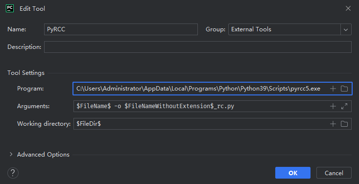</p><p data-lake-id="u40881c1e" id="u40881c1e"><span data-lake-id="u0c45bf5b" id="u0c45bf5b">添加完成后，可在</span><code data-lake-id="u28fc29a9" id="u28fc29a9"><span data-lake-id="ub738c168" id="ub738c168">.qrc</span></code><span data-lake-id="ud6736b2b" id="ud6736b2b">文件右键，</span><code data-lake-id="u88a4a567" id="u88a4a567"><span data-lake-id="u7a0f013a" id="u7a0f013a">External Tools | PyRCC</span></code><span data-lake-id="uc346ea31" id="uc346ea31"> 即可生成对应的</span><code data-lake-id="u4d08ee42" id="u4d08ee42"><span data-lake-id="u89ef06df" id="u89ef06df">.py</span></code></p><p data-lake-id="u8d469858" id="u8d469858">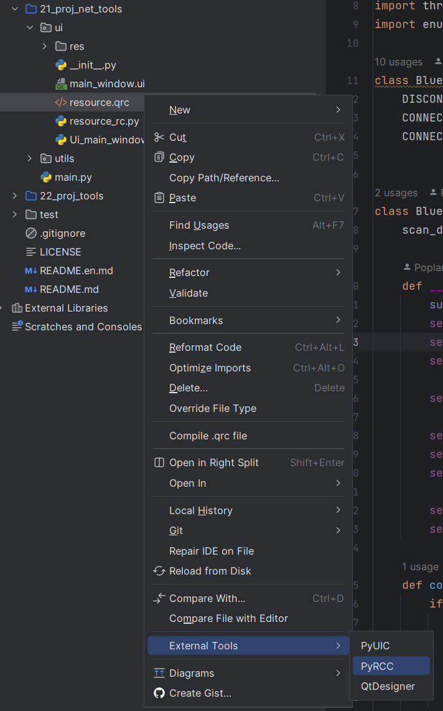</p><h2 data-lake-id="DF17A" id="DF17A"><span data-lake-id="u7587941b" id="u7587941b">常用快捷键</span></h2><table class="lake-table" data-lake-id="CwErF" id="CwErF" margin="true" style="width: 767px" width-mode="contain"><colgroup><col width="250"/><col width="267"/><col width="250"/></colgroup><tbody><tr data-lake-id="uaaf141f2" id="uaaf141f2"><td data-lake-id="u839f98dc" id="u839f98dc"><p data-lake-id="udcd79902" id="udcd79902" style="text-align: center"><strong><span data-lake-id="ucc4cd4e0" id="ucc4cd4e0">按键</span></strong></p></td><td data-lake-id="uc65301a9" id="uc65301a9"><p data-lake-id="u2c876745" id="u2c876745" style="text-align: center"><strong><span data-lake-id="u791ba569" id="u791ba569">功能</span></strong></p></td><td data-lake-id="ua6b60c59" id="ua6b60c59"><p data-lake-id="udf5a9d1c" id="udf5a9d1c" style="text-align: center"><strong><span data-lake-id="u08f3716b" id="u08f3716b">描述</span></strong></p></td></tr><tr data-lake-id="ue5b52f20" id="ue5b52f20"><td data-lake-id="ua5c8f1ed" id="ua5c8f1ed"><p data-lake-id="u7f2598b9" id="u7f2598b9" style="text-align: center"><code data-lake-id="uc19df6bb" id="uc19df6bb"><span data-lake-id="u4d058539" id="u4d058539">Ctrl + /</span></code></p></td><td data-lake-id="u72b23156" id="u72b23156"><p data-lake-id="u3cfc18f4" id="u3cfc18f4"><span data-lake-id="u44b4a565" id="u44b4a565">给选中行添加注释</span></p></td><td data-lake-id="u9e1d26b8" id="u9e1d26b8"></td></tr><tr data-lake-id="ue367281b" id="ue367281b" style="height: 37px"><td data-lake-id="u397f83f8" id="u397f83f8"><p data-lake-id="u9591aa6a" id="u9591aa6a" style="text-align: center"><code data-lake-id="u4961fc77" id="u4961fc77"><span data-lake-id="u062c57f2" id="u062c57f2">Ctrl + D</span></code></p></td><td data-lake-id="u13c7bdfb" id="u13c7bdfb"><p data-lake-id="u118d5fe8" id="u118d5fe8"><span data-lake-id="u2b5bf197" id="u2b5bf197">复制一行到下边</span></p></td><td data-lake-id="uccdc074c" id="uccdc074c"><p data-lake-id="ue2ba652c" id="ue2ba652c"><span data-lake-id="u2c5a0442" id="u2c5a0442">适合复制单行时使用</span></p></td></tr><tr data-lake-id="u91722350" id="u91722350"><td data-lake-id="u92d57bc2" id="u92d57bc2"><p data-lake-id="u8acfc32f" id="u8acfc32f" style="text-align: center"><code data-lake-id="uf836ecde" id="uf836ecde"><span data-lake-id="u89ab92ce" id="u89ab92ce">Ctrl + X</span></code></p></td><td data-lake-id="u628e0e0e" id="u628e0e0e"><p data-lake-id="u80638ef7" id="u80638ef7"><span data-lake-id="u678f86b6" id="u678f86b6">剪切（删除）当前行</span></p></td><td data-lake-id="ua5477d1c" id="ua5477d1c"><p data-lake-id="uaf03947d" id="uaf03947d"><span data-lake-id="u74d9a8e7" id="u74d9a8e7">会覆盖粘贴板里的内容</span></p></td></tr><tr data-lake-id="u9fa6efac" id="u9fa6efac"><td data-lake-id="uff977f99" id="uff977f99"><p data-lake-id="u6152b3e9" id="u6152b3e9" style="text-align: center"><code data-lake-id="u126b1eb4" id="u126b1eb4"><span data-lake-id="udc9c94a3" id="udc9c94a3">Shift + Alt + ↑/↓</span></code><span data-lake-id="u2bc7f43b" id="u2bc7f43b"><br/></span><code data-lake-id="u3df88ea0" id="u3df88ea0"><span data-lake-id="u7e9784ec" id="u7e9784ec">Shift + Ctrl + ↑/↓</span></code></p></td><td data-lake-id="u0cb2e3b6" id="u0cb2e3b6"><p data-lake-id="u02e8b273" id="u02e8b273"><span data-lake-id="u16f14763" id="u16f14763">上下移动一行</span></p></td><td data-lake-id="uae7095cf" id="uae7095cf"><p data-lake-id="u95bb57a1" id="u95bb57a1"><span data-lake-id="ucd042d49" id="ucd042d49">选中多行可以移动多行</span></p></td></tr><tr data-lake-id="u7a59654b" id="u7a59654b"><td data-lake-id="uf805d232" id="uf805d232"><p data-lake-id="ue7e0ee9f" id="ue7e0ee9f" style="text-align: center"><code data-lake-id="u06eae3ab" id="u06eae3ab"><span data-lake-id="u9c0175c3" id="u9c0175c3">Shift + Enter</span></code></p></td><td data-lake-id="u0fbfe142" id="u0fbfe142"><p data-lake-id="u5dd48c30" id="u5dd48c30"><span data-lake-id="u9d772d1a" id="u9d772d1a">从当前行直接新建到下一行合适位置</span></p></td><td data-lake-id="u95ac1c91" id="u95ac1c91"></td></tr><tr data-lake-id="uf3a6036b" id="uf3a6036b"><td data-lake-id="ua580e7de" id="ua580e7de"><p data-lake-id="udaedefd1" id="udaedefd1" style="text-align: center"><code data-lake-id="u76abb6dd" id="u76abb6dd"><span data-lake-id="u212517c0" id="u212517c0">Shift + F6</span></code></p></td><td data-lake-id="uea7ab439" id="uea7ab439"><p data-lake-id="u792866ad" id="u792866ad"><span data-lake-id="u44b97def" id="u44b97def">批量重命名</span></p></td><td data-lake-id="ue8417659" id="ue8417659"><p data-lake-id="ue70d82ab" id="ue70d82ab"><span data-lake-id="u16239403" id="u16239403">光标需要在变量、函数名上</span></p></td></tr><tr data-lake-id="u3d87f5f2" id="u3d87f5f2"><td data-lake-id="uea41bdfc" id="uea41bdfc"><p data-lake-id="u4c8bdd4e" id="u4c8bdd4e" style="text-align: center"><code data-lake-id="ub425921a" id="ub425921a"><span data-lake-id="u25754792" id="u25754792">Ctrl + Shift + Enter</span></code></p></td><td data-lake-id="ua94ed869" id="ua94ed869"><p data-lake-id="u80ecfec9" id="u80ecfec9"><span data-lake-id="ue889e8b6" id="ue889e8b6">自动补齐冒号，并新建一行</span></p></td><td data-lake-id="u2b94d440" id="u2b94d440"></td></tr><tr data-lake-id="ucf81c42b" id="ucf81c42b"><td data-lake-id="u7691c31d" id="u7691c31d"><p data-lake-id="u26b7cce3" id="u26b7cce3" style="text-align: center"><code data-lake-id="u1aea8296" id="u1aea8296"><span data-lake-id="u127bb342" id="u127bb342">Ctrl + Alt + L</span></code></p></td><td data-lake-id="uc6e824ac" id="uc6e824ac"><p data-lake-id="ue2faf5c6" id="ue2faf5c6"><span data-lake-id="ud2052612" id="ud2052612">格式化当前文件</span></p></td><td data-lake-id="u463177e3" id="u463177e3"></td></tr><tr data-lake-id="ue6882653" id="ue6882653"><td data-lake-id="uce75776f" id="uce75776f"><p data-lake-id="ubeca63e9" id="ubeca63e9" style="text-align: center"><code data-lake-id="ub3128a2e" id="ub3128a2e"><span data-lake-id="ubea7f3ba" id="ubea7f3ba">Ctrl + Alt + V</span></code></p></td><td data-lake-id="u62798a9c" id="u62798a9c"><p data-lake-id="u24b17601" id="u24b17601"><span data-lake-id="u24eaf792" id="u24eaf792">提取并声明代码块为为变量</span></p></td><td data-lake-id="u2a7b4b48" id="u2a7b4b48"><p data-lake-id="u641ebdd8" id="u641ebdd8"><span data-lake-id="udab6fb7d" id="udab6fb7d">注意选择合适的提取内容</span></p></td></tr></tbody></table><p data-lake-id="u09bf3f7a" id="u09bf3f7a"><br/></p><h2 data-lake-id="f5NU5" id="f5NU5"><span data-lake-id="uecaec906" id="uecaec906">常见问题</span></h2><h3 data-lake-id="Nmar9" id="Nmar9"><span data-lake-id="ue6f9db57" id="ue6f9db57">Python环境找不到</span></h3><p data-lake-id="uec020049" id="uec020049"><span data-lake-id="uedb393f1" id="uedb393f1">打开设置：</span><code data-lake-id="uff945d61" id="uff945d61"><span data-lake-id="udd44b7f8" id="udd44b7f8">Ctrl +Alt + S</span></code></p><p data-lake-id="u2b4b43f7" id="u2b4b43f7">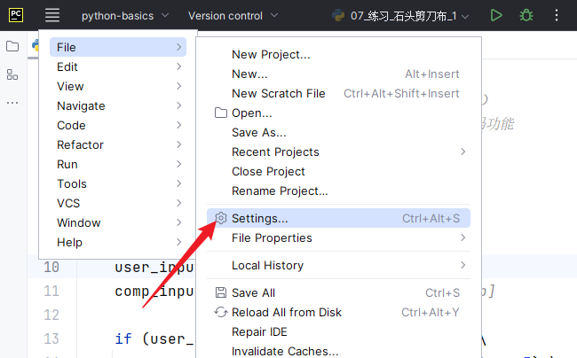</p><p data-lake-id="u8508f0f0" id="u8508f0f0"><span data-lake-id="u9535cb07" id="u9535cb07">添加</span><code data-lake-id="u877fbd8b" id="u877fbd8b"><span data-lake-id="uf3b4835d" id="uf3b4835d">Local Interpreter...</span></code></p><p data-lake-id="u18036bdc" id="u18036bdc">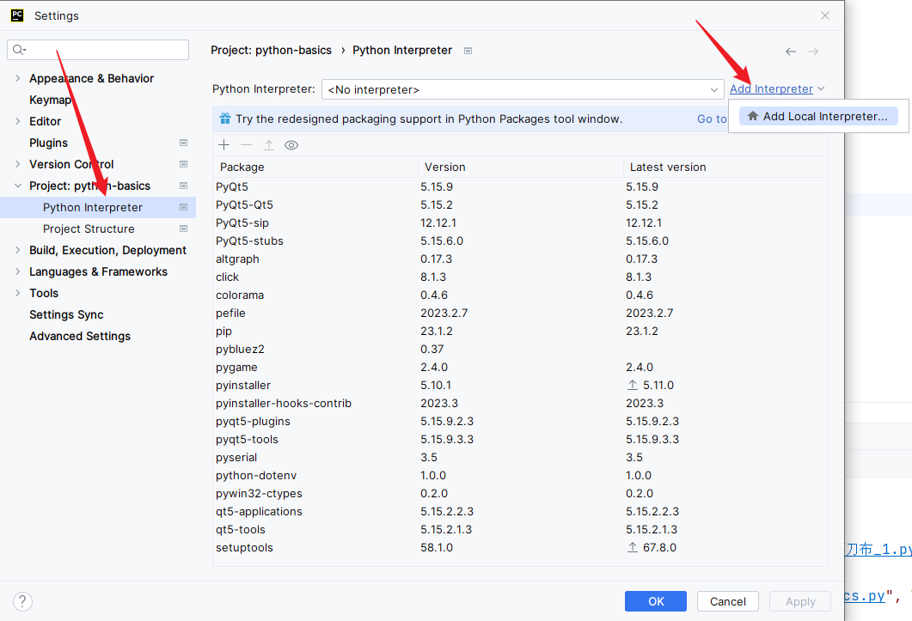</p><p data-lake-id="u51f50046" id="u51f50046"><span data-lake-id="u24c9c08c" id="u24c9c08c">打开</span><code data-lake-id="u2ed0fe7c" id="u2ed0fe7c"><span data-lake-id="uf44509a7" id="uf44509a7">System Interpreter</span></code><span data-lake-id="uaae6dde4" id="uaae6dde4">，找到本地安装的</span><code data-lake-id="ubb18a89e" id="ubb18a89e"><span data-lake-id="u1afcfe1c" id="u1afcfe1c">Python.exe</span></code><span data-lake-id="u2cf3b954" id="u2cf3b954">路径，然后一路点</span><code data-lake-id="ucfd4c5a6" id="ucfd4c5a6"><span data-lake-id="u635064ec" id="u635064ec">OK</span></code></p><p data-lake-id="u8e4c9e06" id="u8e4c9e06">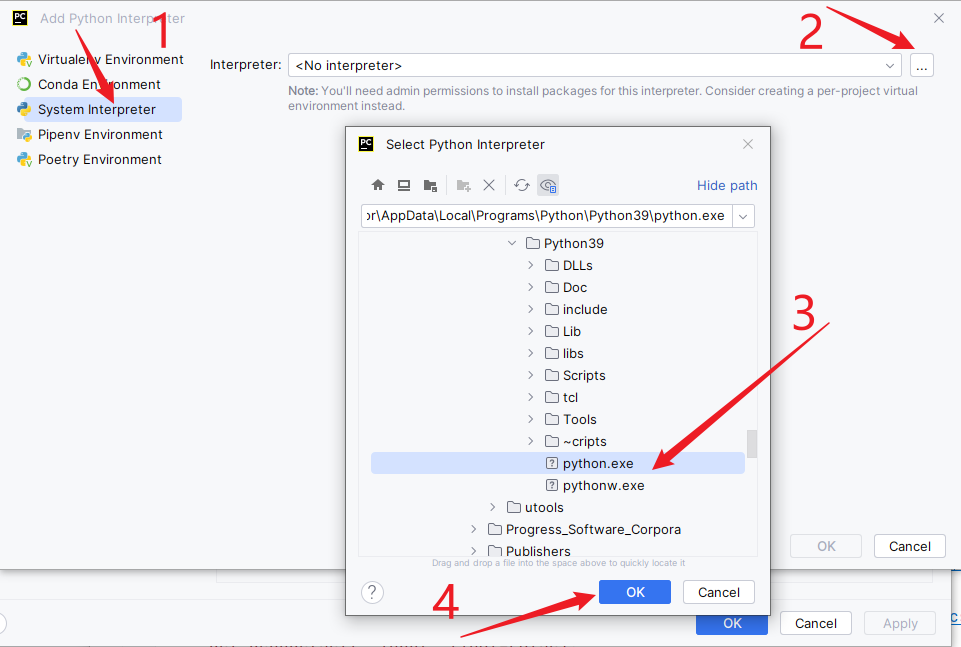</p><p data-lake-id="ue597adef" id="ue597adef"><br/></p><h3 data-lake-id="Z78WU" id="Z78WU"><span data-lake-id="u38a33835" id="u38a33835">Trust Project</span></h3><p data-lake-id="u1b030555" id="u1b030555"><span data-lake-id="u9e9833f6" id="u9e9833f6">如果打开工程时，出现如下对话框，请勾选 </span><code data-lake-id="uc5eb7118" id="uc5eb7118"><span data-lake-id="u166fe4eb" id="u166fe4eb">Trust projects in ...</span></code><span data-lake-id="u5a4162b3" id="u5a4162b3">，并点击按钮</span><code data-lake-id="u95b697ed" id="u95b697ed"><span data-lake-id="uefd45226" id="uefd45226">Trust Project</span></code></p><p data-lake-id="uaa8a71e7" id="uaa8a71e7">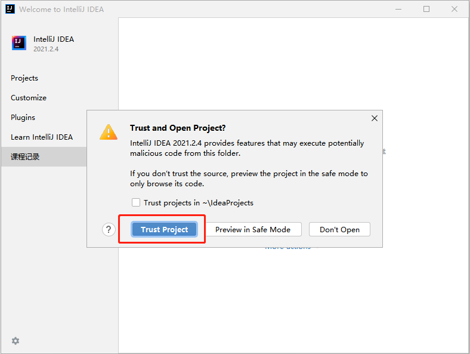</p><h3 data-lake-id="NMUU0" id="NMUU0"><span data-lake-id="u3b77d18c" id="u3b77d18c">Download pre-built</span></h3><p data-lake-id="u15086167" id="u15086167" style="text-align: left"><span class="lake-fontsize-12" data-lake-id="u992a2bbd" id="u992a2bbd" style="color: #000000">出现如下提示框，“</span><code data-lake-id="u97a434b0" id="u97a434b0"><span class="lake-fontsize-12" data-lake-id="ua2175bf3" id="ua2175bf3" style="color: #000000">Download pre-built shared indexes</span></code><span class="lake-fontsize-12" data-lake-id="u8db0d2fc" id="u8db0d2fc" style="color: #000000">”为下载预编译共享索引，点击“</span><code data-lake-id="uf165ec69" id="uf165ec69"><span class="lake-fontsize-12" data-lake-id="u993910f4" id="u993910f4" style="color: #000000">Always download</span></code><span class="lake-fontsize-12" data-lake-id="ud82b9aea" id="ud82b9aea" style="color: #000000">”即可。待右下角蓝色进度条完成消失后，可进行下一步操作。</span></p><p data-lake-id="u41bc35af" id="u41bc35af" style="text-align: center">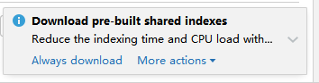</p>